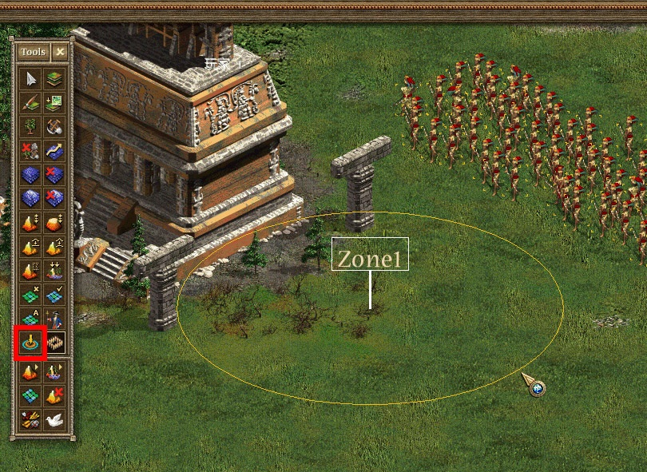
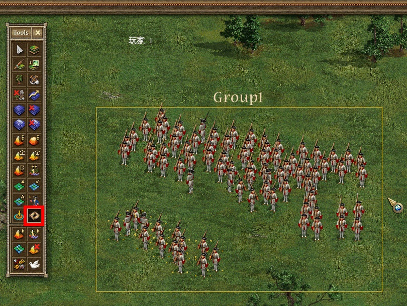

首先，要单击键盘上的 Scroll Lock 键来打开 Scroll Lock 功能。然后点击下图中红框内的 创建任务区域 图标，之后将鼠标移到地图中，此时会弹出一个命名窗口，可以为要建立的任务区域命名。要记住这些名字，以方便之后在场景编辑器中使用它们。
命名之后，鼠标上会出现任务区域中心指示牌，选择一个位置单击鼠标左键，即可放置指示牌；拖动鼠标可以设定任务区域的大小，之后可以通过鼠标选中任务区域边缘来调整大小；拖动指示牌底部，可以移动任务区域。

2、任务组
同样，要单击键盘上的 Scroll Lock 键来打开 Scroll Lock 功能。选中一个或一组单位、建筑，之后点击下图中红框内的 创建任务组 图标，之后将鼠标移到地图中，此时会弹出一个命名窗口，可以为要建立的任务组命名。
此时任务组就与选中的单位关联起来，任务组的位置会随着任务组中单位的位置来移动，显示为一个矩形框，框的上部显示了任务组的名称。

注：在 征服美洲-分裂的国家、征服美洲-黄金版、欧洲战争-拿破仑 中使用该功能时需按下 Ctrl+J 才会显示任务区域和任务组。